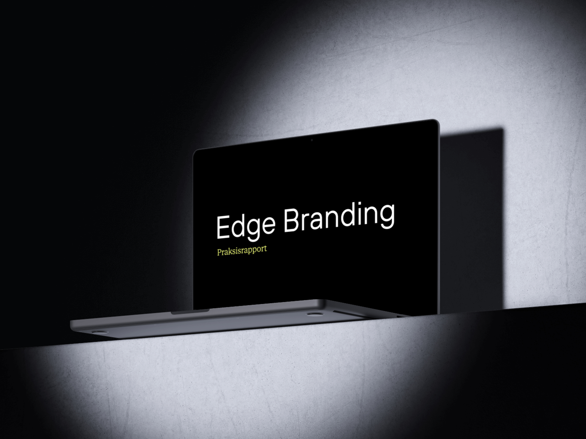

This portfolio shows the work I have done with websites, systems, visual design and digital presentation.
Each project has helped me understand design, code, structure and how to build something that works for real users.

Praksisrapport
›A report documenting my internship period at Edge Branding, frontend work, technologies and AI-assisted workflow.

Synapse
›A clean concept project focused on visual style, layout and presenting an idea through a polished interface.
Nerdy-cmd
›A terminal-inspired portfolio experience where users can explore projects with simple commands.

Frisk AS
›A group project made with design, structure and functionality in mind.